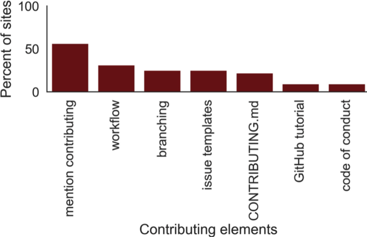
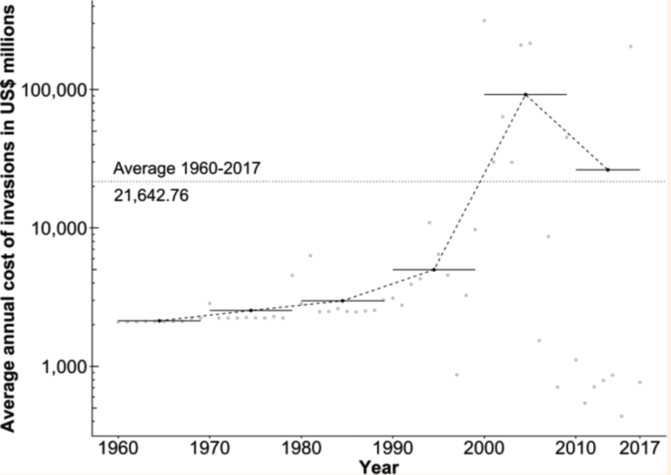
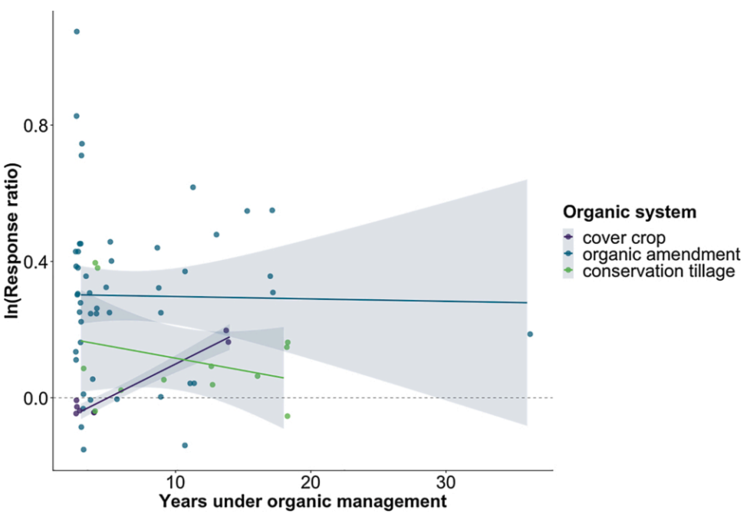
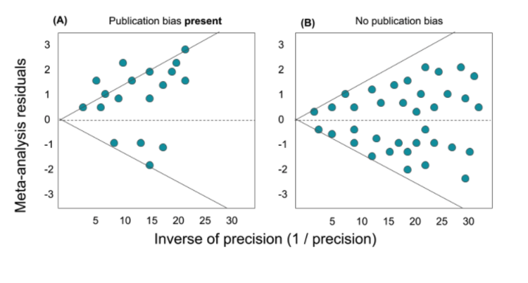
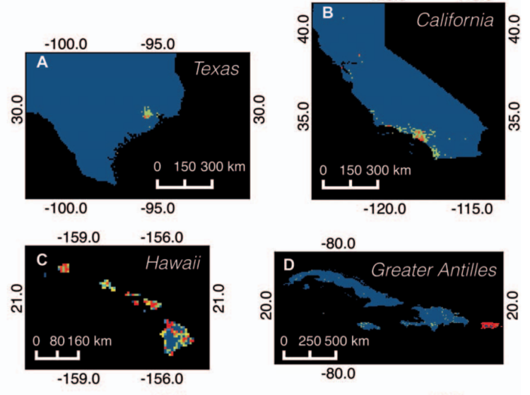

Portfolio
A full list of the projects I’m working on can be found on GitHub.
Data engineering for ML-ready data
At Berkeley Lab, I led 6 teams of senior data scientists, software engineers, and informatics specialists who developed bioinformatics (meta)data standards for the Department of Energy’s National Labs. I used natural language processing and statistical models in python to identify patterns in how data standards are developed and shared online.
Within 2 years, this effort culminated in 5 peer-reviewed publications, 7 open access datasets, and 11 data standards that are in use. Read more about this work in our paper in Nature Scientific Data.

Timeseries Analysis of Economic Impacts
I led a global collaboration with 8 scientists and analyzed a large semi-structured database.
I developed and reviewed code in R (GitHub repository) to standardize the global database and interpolate any missing cost values. Our analysis identified an average US$21 billion dollar to the North American economy per year since 1960.

Multivariate mixed-effects models
Expert in multivariate Carbon sequestration models for a 1 year data science postdoc position with University of Maryland and NGO, The Organic Center.
I engineered a standardized database to help agriculture business and farmers choose the farming practices that optimize soil health.
Find dode for this analysis in my GitHub repository, and summary of results in my white paper and peer reviewed publication.

Statistics textbook using R
I’ve authored an eBook on multivariate modeling and data science statistics in R. The book takes users from engineering a standardized dataset, to running multivariate modeling algorithms, to checking for bias in datasets.

Machine learning classification
I leveraged a large publicly available dataset to predict a biosecurity threat using geospatial machine learning ensemble and maximum entropy models.
Code available for models on GitHub and peer-reviewed paper is here.
Our research was highlighted in a New York Times article, and I adapted this machine learning code into classroom material that I taught in a 1 week coding bootcamp.
